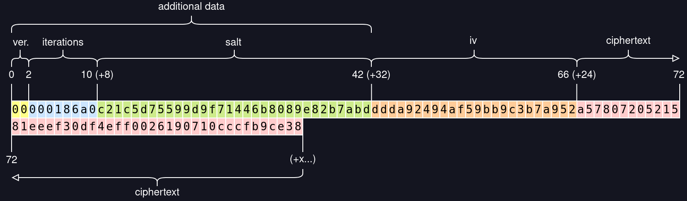

An easily auditable tool to encrypt/decrypt your sensitive data.
One file, no dependencies. If you trust the browser internals you just have to audit that file.
It's small, you can either use it from https://svanill.com (and review it every time) or keep your own copy.
Even without a network connection it will allow you to encrypt/decrypt data on your device.
If you provide a username you will be able to sync your encrypted data with an external server (by default https://api.svanill.com, an instance of svanill-vault-server). Without it no network requests will be sent.
Eventually a version of Svanill without network code will be done.
By the way, don't trust the external server for privacy, verify that Svanill will just send encrypted data that can be secure at rest, that's the point of having auditable code.
You can find the sources on Github.
Content is secured by a symmetric encryption algorithm, using AES-GCM.
The primitives used come directly from the browser (crypto.subtle and crypto.getRandomValues).
The key is derived using PBKDF2-HMAC-SHA-256, 100.000 iterations.
The size of the iv/nonce is 96 bit, randomly generated before any encryption.
The salt is 128 bit long, randomly generated before any encryption.
Random data is obtained through crypto.getRandomValues (its PNRG is suitable for cryptographic purposes).
Everything but the key is prepended to the ciphertext and thus public.
The data must be secure at rest, so the strength of the key is what matters most.
You should use the longest passphrase you are confident to remember (assuming just english letters and digits, it should be at least 14 characters long - around 72 bit of entropy).
The following diagram represents the result of encrypting the text `svanill` using `foobar` as password. Note that this particular password is weak (short and guessable), used just for the sake of example. Every box contains an hexadecimal character (two boxes, one byte).

To decrypt we read the first byte to determine how the rest of the bytes are aligned, and use them to decrypt. If somehow the data got tampered we won't be able to decrypt.
Since we are not communicating with an external party during decryption there should be no timing attack.
To protect against a purposefully crafted high iteration number, which would starve the cpu, Svanill won't attempt to decrypt if that number is higher than what we configured to encrypt.
Nothing from decryption is reused for future encryption, to prevent downgrade attacks or blatant compromissions (like reusing the iv).
It's not really an option, Argon2 is not part of the Web Cryptography API.
It would be an external dependency, pretty much inscrutable and requiring to verify its authenticity. I decided not to give the user the burden to verify the signatures. I also liked the idea of a self-contained program that could work without network requests.
No, but but you should use private browsing nonetheless.
That's a difficult question. If you don't, you shouldn't use it to navigate the Internet. The highest risks are when you are using an outdated browser and when you're using browser extensions. If you want to be at ease you should use an updated browser and open Svanill from a profile without extensions, in private mode (even moreso if you're using someone else's computer).
Because you should be able to check if the original code or any later update contains malicious operations or bugs, and be able to act accordingly.
Even if I would deem secure a particular version, every update could contain malicious code (e.g. the company has been acquired by EvilCorp or forced by a powerful entity) or may contain bugs which I would not be able to neither detect nor fix, letting me open to attacks until a new update arrive (if ever).
Even if the software is audited by a third party it usually doesn't mean that every single update is audited.
Yes, you could keep a local copy to encrypt/decrypt data (you would not be able to sync online of course).
These programs do not really match the goals of Svanill, but they come up anyway in questions, so here they are.
Impressive product, they open source everything from mobile app to website vault. It just doesn't match our goals.
Very interesting product. Standalone support, truly comprehensive cross-platform versions, stores the data using SQLCipher (which is open source) and never stores your data online. Doesn't match our goals.
Both are closed source and not freely auditable by an independent external auditor. 1Password in particular has neglected Linux for years.
Too big to audit for a solo developer. Keypass 1.x was audited, but Keypass 2.x was not and, cit. keypass.info, "They are fundamentally different". No official/audited Android application. Yet it's respected and full featured if that's what you're searching for.
Requires to keep around a gpg private key. No official/audited Android application.